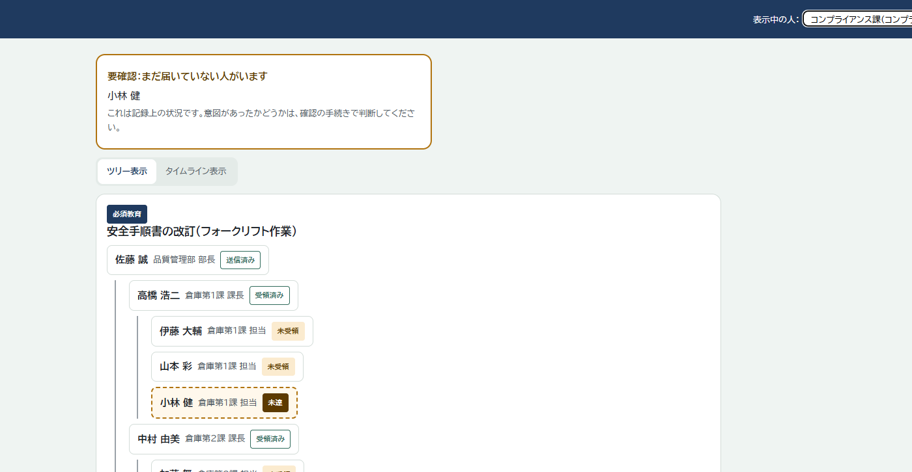
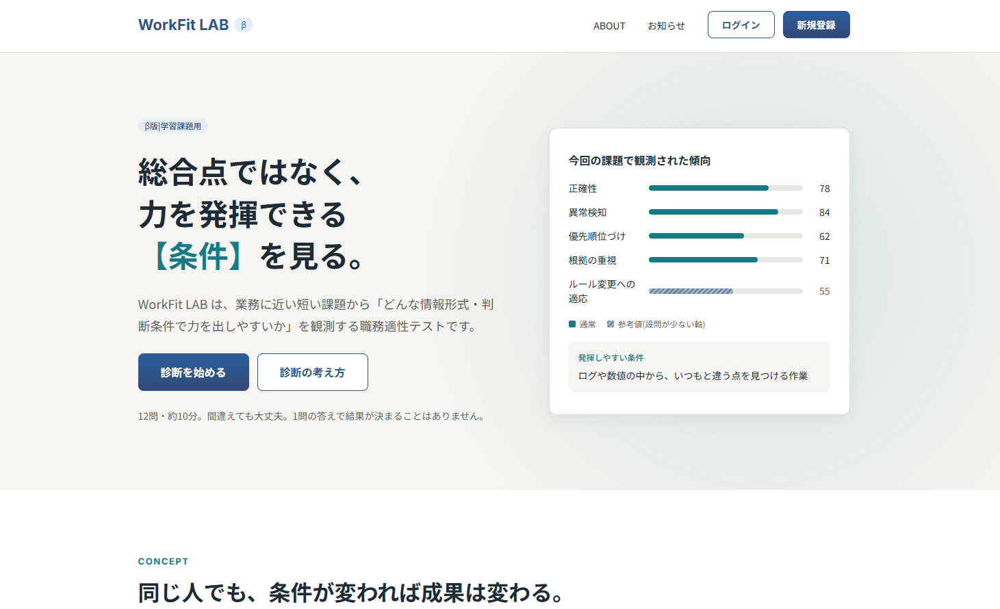

能力が育つ入口
01学習機会へのアクセス格差は認知能力の活用を阻害するのか
認知能力の高い人のうち88.2%（2,527人）が、過去1年間に教育訓練を受けていませんでした。その9割以上は働いており、職場で力を使いながらも、組織的な学びの機会とつながっていない「潜在人材」であることがわかりました。
この分析から：WorkFit LAB、情報伝達チェッカー
Excelファイル（7.2MB）はじめまして、CSD-Od です。
人と組織のあいだで起きる問題を見つけ、公的な統計で確かめ、要件定義からWebアプリケーションの開発まで、一人で一貫して取り組んでいます。接客の仕事で身につけた「使う人がどこで迷い、何に不安を感じるか」という視点を、設計の土台にしています。
人の力が正しく活かされる職場を、システムの側から支えたいと考えています。まずは、現場の課題をデータで確かめてから道具を作る仕事に携わり、将来はセキュリティの専門性を高めて、情報保護やアクセス制御を考えた安全な社内向けAI環境づくりに関わることが目標です。
ツールを作る前に、そのツールが本当に必要とされているかを確かめるところから始めます。
現場で感じた違和感を、確かめられる問いにします。例：能力があっても活かされないのはなぜか
OECDの国際調査や政府統計、公開された民間調査を使い、Excelで分析します。例：4本の分析レポート
分析の結果から、仕組みで解決できる課題を見つけます。例：能力の高い人の88.2%が、職場の教育訓練とつながっていない
使う人の行動や心理、想定外の操作、運用とセキュリティのリスクまで洗い出して文書にします。例：個人サイトの要件定義書は第2.38版まで改訂
Figmaで画面を決め、PHP・JavaScript・WordPressなどで実装し、Gitで変更を記録します。
仕様とコードが合っているか、公開前の確認項目に漏れがないかを点検します。
4本のレポートは、「能力があっても活かされないのはなぜか」という一つの問いを、能力が育つ入口から、組織で評価される段階までたどったシリーズです。分析はすべてExcelで行い、元データを直すと結果が計算し直される構成にしています。
能力が育つ入口
認知能力の高い人のうち88.2%（2,527人）が、過去1年間に教育訓練を受けていませんでした。その9割以上は働いており、職場で力を使いながらも、組織的な学びの機会とつながっていない「潜在人材」であることがわかりました。
この分析から：WorkFit LAB、情報伝達チェッカー
Excelファイル（7.2MB）能力が育つ入口
01で扱えなかった「親の収入」を政府統計で補いました。世帯収入が高いほど学習費と成績の自己評価が高く、01で使った「親の学歴」を家庭の経済状況の目安とすることにも、一定の裏付けが得られました。
01の派生レポート
Excelファイル（マクロ付き・0.1MB）学び続けるかどうかの分かれ道
教育訓練を受けた人は、受けていない人より読解力と数的思考力が約20点高く、ICTを使う頻度も高い傾向がありました。能力そのものだけでなく、学びや情報技術に触れられる環境の大切さを示しています。
この分析から：WorkFit LAB
Excelファイル（2.7MB）組織で評価される段階
従業員の78.7%が評価によって意欲が下がった経験を持ち、「制度がうまくいっている」と感じる割合は、経営者と従業員で42ポイントの差がありました。業界事例から立てた10の仮説を、データで確かめられるものと確かめられないものに分けて検証しています。
この分析から：WorkFit LAB、情報伝達チェッカー
Excelファイル（0.1MB）どのレポートも、関係のあるデータを並べて傾向を確かめる探索的な分析です。因果関係までは示していません。
分析で見えた課題を、どの制作物でどう解こうとしているかの対応です。
対応づけは、独立した分析の結果を作者が解釈してつないだものです。


アクセス経路の設計とセキュリティ設計
一人の作者が作品を展示するための個人サイトです。作者が安心して運営を続けられることを最優先に、閲覧できる経路を厳しく限定し、閲覧者を追跡しない設計にしています。
要件定義書（第2.38版まで改訂）と運用手順書を、実装と並行して更新しています。セキュリティ上の理由から、URLとソースコード、詳しい仕組みは公開していません。
MVCフレームワークでの開発
Laravel で制作しているSNSです。モデル・ビュー・コントローラーに役割を分ける MVC の構成で開発しています。
開発では、生成AI（Claude）を補助として使っています。AIが書いたコードは1行ずつ意味を確かめてから取り込み、理解があいまいなところは自分の手で書き写して確認します。そのうえで、仕様と合っているかを自分で検証しています。
データの扱いには決まりを設けています。実在の個人情報を含むデータはAIに渡さず、AIに見せるのはテスト用の架空のデータだけにしています。また、公開しないコードは非公開のリポジトリで管理し、AIの学習に使われる設定もオフにしています。
将来はサイバーセキュリティ分野の専門性を高め、情報保護やアクセス制御を考えた、安全な社内向けAI環境の構築に携わりたいと考えています。特に、コーディングやコードレビューを補助し、開発業務の効率化とセキュリティを両立できるシステムの実現を目指しています。